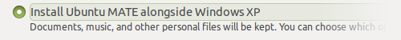
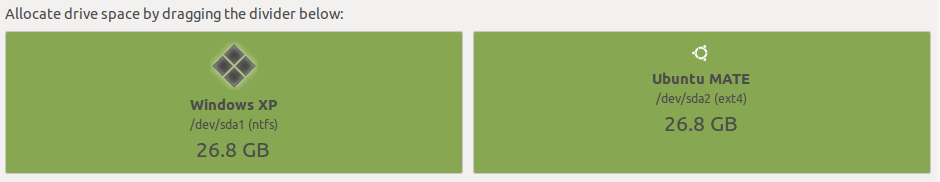
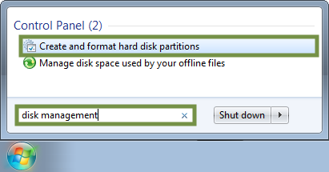
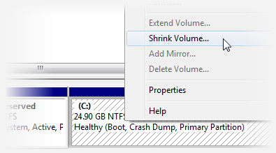
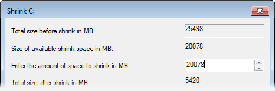

Please choose a topic to get started.
Modest System Requirements
works well on both high-end to older computers, optimized to be functional, while light on system resources.
Minimum
- Pentium Dual Core 1.6 GHz - approximately created in 2007
- 2 gigabytes (GB) of RAM
- 16 gigabytes (GB) of disk space
Recommended
- Pentium i3 - approximately created in 2013
- 4 gigabytes (GB) of RAM
- 80 gigabytes (GB) of disk space
The operating system will run much more efficiently if your computer meets or surpasses the recommended requirements.
Preparing to Install
is relatively simple to set up, whether you're looking to replace your existing operating system or install alongside an existing one - such as Microsoft Windows or another GNU/Linux distribution.
For the best results:
- Back up any important data to another storage device.
- Connect to the Internet to install all available updates during installation.
- Stay connected to the Internet to install all available updates.
- Plug in your device to the mains if it is running on battery power.
The live session you are currently in right now is a good opportunity to test without modifying your computer, allowing you to test all of your peripherals are working as intended before committing to installing it on your machine. Once you are ready, double click the installation icon from the desktop.
Modern UEFI-based computers
If you have a modern PC that uses the Unified Extended Firmware Interface (UEFI), you may need to disable Secure Boot (or enable the Unlock Bootloader option) prior to installation, particularly if an operating system was pre-installed.
If you are using a legacy BIOS machine, you do not need to do this.
Especially when dual booting, it is important that you boot your system in the correct mode and use the 64-bit image , as you cannot boot an operating system installed in BIOS mode after installing a UEFI-enabled operating system or vice versa.
Booting in BIOS mode on a UEFI system with a GPT-formatted disk will also show a "protection layer". Do not worry, your data is not lost or corrupt!
Swap
For computers that start to run low on memory (RAM), the operating system will start swapping to disk. Known as a "paging file" in Windows. Performance will decrease when running low on memory and could possibly freeze if you completely run out of memory without anywhere to swap.
By default, a swap partition is created based on the size of your RAM. For example, if you have 2 GiB of RAM, then 2 GiB of hard disk space will be reserved for swap at the end of the drive.
By default, a swap file is created based on the size of your RAM. For example, if you have 2 GiB of RAM, then 2 GiB of hard disk space will be reserved for the swap file. A separate swap partition is no longer required to be created.
Dual Booting
Should you wish to install alongside your existing operating system, your partitions need to be shrunk. This results in sections of your hard disk being split between multiple operating systems.
To minimize the risk of data loss or failure, ensure that:
- There is enough free space. 10 GB minimum is recommended.
- Back up important data to another drive.
- Defragment the hard drive.
- Ensure Windows has been cleanly shut down (not hibernated).
Which approach would you prefer?
The simplest method is to use the installer.
The installer scans your disks for existing operating systems and provides a choice on what you'd like to do.
You will see an option similar to this:

Followed by:

Do not interrupt or power off the computer during a resize operation.
If you do, data loss or a partition table corruption could occur. Please double check your changes before proceeding.
The installer may show a spinner cursor for a long period of time, depending on the size of your disk.
When you next boot Windows, run
chkdsk /f from the command prompt to check the
file system for errors. Windows may schedule this automatically. This
ensures consistency for the NTFS file system.
Use GParted or the installer's "Custom" option.
GParted is available during the live session only. It is located under the System Administration menu. GParted provides complete flexibility over your partitions, primarily for power users who know how they'd like to layout their disks. This method makes changes to partitions prior to installation.
After completing operations to your disk, you can leave the remaining space unallocated, whereby the installer will detect this unused space to install to.
Using the Installer's "Custom" option.
Instead or in addition to GParted, the Custom option during the installation wizard can also configure and resize your partitions as well as choose mount points. Dividing your disks can make it somewhat easier to re-install the operating system later if desired.
You can specify these mount points:
/- The base for /boot- Bootloader and kernels/home- Your personal files and folders/tmp- Temporary files/usr- Contains most of the applications (binaries, documentation, libraries, etc)/var- Variable data (such as system logs)/srv- Data for System Services (typically used for server configurations)/opt- Additional software unmanaged by the package manager (such as Spotify)
Creating separate partitions for all above mount points is not necessary.
The commonly partitioned directories being /, /home
and /boot. These mount points can also be set across different
physical disks, for instance, if you'd like the OS / on an SSD,
but your personal files /home on a mechanical hard drive.
Shrink your system disk within Windows.
Applies to Windows Vista and later.
If you are using Windows XP or earlier, you will need to use the Simple or Advanced method to shrink your disk.
Newer versions of Windows provide a tool to shrink the NTFS volume from within Windows. This is a safer bet if it's essential that Windows still boots on your computer while experiencing .
1. Open Disk Management from the start menu.
2. Right click your desired drive and choose Shrink Partition from the context menu.
3. Enter the amount to shrink your system partition by.
Remember, needs at minimum 16 GB of disk space. 1 GB = 1000 MB
Further Reading
For further information on the best practices to modify partitions containing Windows, see the following help article online.
Repairing Boot Problems
Linux distributions use a boot loader known as grub,
which looks for and bootstraps the operating system. However, some operating
systems (such as Windows) do not integrate with existing
boot loaders and will overwrite them, with the potential to lose access
to temporally.
Fortunately, you can use the Boot Repair tool to repair common problems caused by other operating systems.
Requires downloading a package.
Please connect to the Internet to download and use this utility.
Sorry, Welcome was unable to establish a connection.
Updates & Extras
An Internet connection is required to download and install updates.
Software Updater
periodically will check to see if new software and security updates are available for your computer. If you have just installed , you might want to do this now.
Software Updater can be found later in Application Menu
Restricted Extras
Ubuntu(the base distribution of ) strives to make all of the most important software available to its users automatically. However patent and copyright restrictions (see Ubuntu License Policy) complicate distribution of software to support non-free formats.
However, you can install the ability to play popular non-free media formats, including DVD, MP3, Quicktime, and Windows Media formats, by following the instructions below.
Ubuntu’s commitment to only include completely free software by default means that proprietary media formats are not configured “out of the box”. See Ubuntu’s Free Software Philosophy and the Free Formats page for a more comprehensive discussion of these issues.
Legal Notice Patent and copyright laws operate differently depending on which country you are in. Please obtain legal advice if you are unsure whether a particular patent or restriction applies to a media format you wish to use in your country.
Drivers
While a wide range of hardware is compatible with , there are some components and peripherals that require proprietary drivers to function properly. Installing the firmware package is often required to get some devices, typically Bluetooth and Wi-Fi, to work correctly.
An Internet connection is required to download and install drivers.
Additional Drivers can be found later in Software & Updates
Graphics
Proprietary or Open Source Drivers?
Proprietary drivers come directly from the manufacturer. As they are not open source, Ubuntu developers are unable to review and improve driver code meaning you'll have to rely on the manufacturer for support.
In addition, proprietary drivers can significantly improve graphics performance and as a result, the entire system. Users may wish to install these drivers to:
- Run 3D applications and games.
- Improve power management, particularly if the device experiences overheating problems under open source drivers.
- Improve support for high resolutions and multiple monitors.
- Fix blank screen issues.
Proprietary drivers are known as "binary blobs". Certain hardware may experience adverse behavior, causing more issues than the open source drivers, such as:
- Failing to boot to the graphical desktop.
- Broken drivers after an upgrade.
- Severe graphical glitches.
- Problems with applications/games requiring hardware acceleration.
Wireless, Bluetooth and Other Devices
If there were no additional drivers found for the hardware nor did it work after installing the firmware packages, you may need to research your device to find the appropriate driver.
Unfortunately, this is due to the fact the manufacturer for your hardware hasn't provided any source code for developers to freely use, or there is insufficient documentation to create drivers for your particular brand and model.
Some manufacturers may provide closed source drivers provided by themselves directly. If you require assistance, feel free to ask the community.
Input method
In , we provide an option to switch between two widely used keyboard entry layouts. IBus(Intelligent Input Bus) and Fcitx(Free Chinese Input Toy for X).

Complex Input
Some regions of the world require complex inputs.
Backup, Firewall and User Management
provides option to install a backup utility or firewall and supports multiple user accounts.
Backups
Nothing is more important then having a backup of your personal files, just in case something disastrous happens to your computer.
Deja-Dup is a powerful backup utility that can be installed in and supports backups to local devices as well as online cloud-based services.
 Applying Changes...
Applying Changes...
Firewall
Firewalls prevent malicious connections entering and leaving your computer. By default, the firewall is disabled, learn more about firewalls.
Gufw provides a graphical frontend to ufw
(Uncomplicated Firewall). If security is important to you, there are
more ways to stay secure too.
Applying Changes...
Users
Share your computer with others? Set up a separate user account for each user to protect the individual privacy of each user sharing the same computer.
You can also log in to a Guest Session if someone is using your computer as a one-off.

User Interface
provides a unique tool to transform the user interface. It can be used to quickly setup the user interface to broadly reflect how other popular operating systems look and feel.
Raven Configuration Center can be found later in budgie panel options .
Settings
The utilities mentioned above are all part of the extensive Settings control center that provides. You can configure just about every aspect of your computer from Settings.
Keyboard Shortcuts
has many keyboard shortcuts that help make using your computer more efficient.
The Super key is your Windows key. For Mac keyboards, this is the ⌘ Command key.
Budgie Desktop shortcuts
Some common shortcuts used in Budgie Desktop
| N | Open notifications in Raven |
| A | Open applet Settings in Raven |
Common application shortcuts
These shortcuts apply in most applications.
| F12 | Toggle Tilix Quake Mode |
| Ctrl C | Copy the selected text/object |
| Ctrl X | Cut the selected text/object |
| Ctrl V | Paste/insert the selected text/object |
| Ctrl A | Select all text |
| Ctrl F | Find words |
| Ctrl F | Find and replace words |
| Ctrl B | Make the selected text bold |
| Ctrl I | Make the selected text italic |
| Ctrl U | Underline the selected text |
| Ctrl N | Open a new document or window |
| Ctrl S | Save the current document |
| Ctrl O | Open another document |
| Ctrl P | Print the current document |
| Ctrl Z | Undo the last change you made |
| Ctrl Shift Z | Redo a change that you just undid |
| F11 | Toggle the current application between full-screen and windowed |
Desktop shortcuts
This section lists common keyboard shortcuts which you can use to operate parts of the desktop.
| Open Applications menu | |
| Alt F2 | Run an application by typing its name in the box which appears |
| Ctrl Alt Delete | Logout |
| L | Lock your screen. |
| Ctrl Alt T | Open a terminal. |
| Alt S | Screen reader enable/disable. |
Window shortcuts
| Alt Tab |
Switch between currently-open windows.
|
| Ctrl Alt Left | Switch to the previous workspace. |
| Ctrl Alt Right | Switch to the next workspace. |
| Ctrl Alt Shift Left | Move the current window to the previous workspace. |
| Ctrl Alt Shift Right | Move the current window to the next workspace. |
| Alt F4 | Closes window. |
| Alt F5 | Returns window to 'normal' or previous size. |
| Alt F7 | Moves the current window (can be moved with mouse or keyboard). |
| Alt F8 | Resizes current window (again, can be moved with mouse or keyboard). |
| H | Minimizes current window. |
| Up | Maximizes current window. |
| Alt Space | Displays the window menu with options such as 'Always on Top' and 'Minimize' and 'Maximize' and above commands. |
| Left | Place window on left side of screen. |
| Right | Place window on right side of screen. |
What's inside my computer?
Your machine is made up of various components that interact with one another. This information is useful when providing support to ensure hardware and software works on your machine.